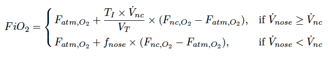

More details on Benaron-Benitz:
The Benaron-Benitz model implements the formula derived by Benaron DA & Benitz WE, Arch Pediatr Adolesc Med., Mar. 1994;148(3):294-300 :
Here the tidal volume \(V_T = 5.0\times W\) (ml), with weight \(W\) (kg), and the inspiratory rate through the nose \(\dot V_{nose}=\frac{f_{nose}\times V_T}{T_I}\) (ml/s) with \(f_{nose}\) the fraction of inspiratory flow which is inspired through the nose and \(T_I\) (s) the inspiratory time. The atmospheric oxygen concentration (\(F_{atm,O_2}\)) and the nasal cannula concentration (\(F_{nc,O_2}\)) are both measured as a percentage of oxygen.
This formula is proportional to cannula flow rate and blender percentage (\(B\)), and inversely proportional to weight through tidal volume.
In the construction of this model, Benaron and Benitz assume a respiratory rate of 65 breaths/min, constant nasal flow over the inspiratory cycle and that the upper airway does not act as a reservoir. For their model to be most accurate to their empirical measurements, it is recommended to use \(V_T\) = 5.0 ml/kg, \(T_I\) = 0.3 s and \(f_{nose}\) = 0.67, which are the values used in this implementation.
This model is recommended for use for flow rates up to 2000 ml/min as that is the maximum value considered to be low-flow. It should be noted that respiratory rate is assumed for all patients so it may be a source of inaccuracy for patients with a respiratory rate much lower (or higher) than 65 breaths/min.